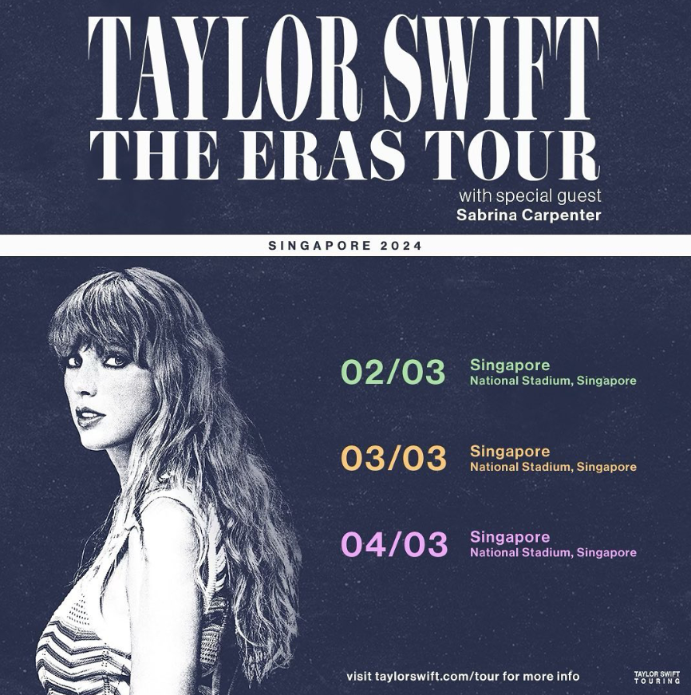
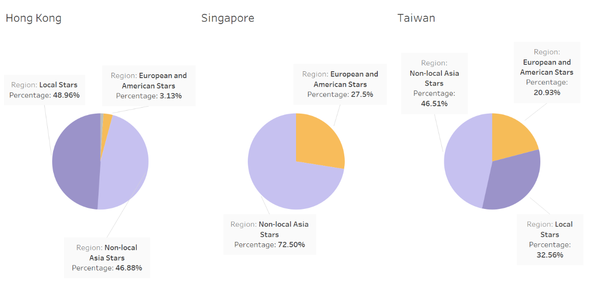
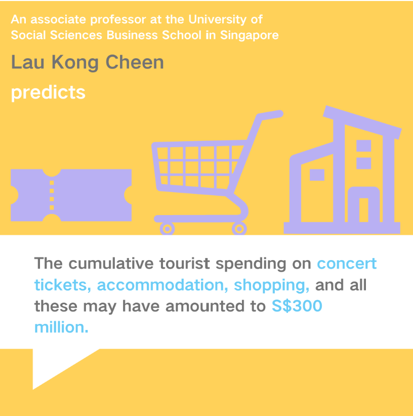

Hong Kong Concert Market Faces Challenges with Star Power and Aging Audiences In Post-Pandemic Era
The concert market in Hong Kong has seen a revival after easing social distancing measures and gathering restrictions. In 2023, an average of two major concerts were held in Hong Kong by international stars each month, with each attendance exceeding 10,000, Yeung Yun-hung says at a Legislative Council meeting.
While it is true that the concert market has seen a revival compared to the pandemic period, there are some problems that cannot be ignored. The most crucial issues include Hong Kong's declining attractiveness to international superstars and the aging trend of incoming singers.

Problems are highlighted during the Asian tour of Taylor Swift. Instead of coming to Hong Kong, the popular American singers chose to hold concerts in Japan and Singapore, which disappointed many Hong Kong fans.
“I thought she would come to Hong Kong. I was really looking for that,” Ming Wei, a fan of Taylor Swift, said. “Hong Kong should have sought the opportunity to hold such events, but it didn’t. I am disappointed.”
Diminishing Attraction for big names from Europe and America
As global music tours resume in full swing, major international singers came to Asian stages in late 2023 and early 2024. However, Hong Kong seems to be less favored this season, with stars like Taylor Swift, Bruno Mars, Coldplay and Ed Sheeran choosing places like Japan, Taiwan, Singapore, and Thailand as their preferred stops.
Despite Hong Kong being a part of Bruno Mars and Ed Sheeran's previous Asian tours, data from the current season shows that the city has the lowest participation rate of European and American stars compared to its regional counterparts, Singapore and Taiwan. This trend marks a significant shift in venue preference among superstars.

Behind Hong Kong’s losing attraction and the shifting regional preference for superstars, the cost of attending concerts for Hong Kong fans has increased.
“Instead of walking for several minutes, now I have to take flights for hours to attend her concerts,” Wei says, “airline ticket money and hotel accommodations even exceeded the price of concert tickets.”
While international star presence dwindles, local Hong Kong artists are thriving, capturing over 40 percent of the concert scene, which provides a substantial platform for local talent.
The participation of non-Chinese Asian artists (notably from Korea and Japan) remains consistent across Hong Kong, Singapore, and Taiwan, ensuring that Hong Kong fans still enjoy access to popular acts from these countries.
Ageing Trend in the Hong Kong Concert Market
From the perspective of artists’ age, fewer singers in the new generation choose to hold concerts in Hong Kong. For example, Korean idols Twice and (G)i-dle chose to give the concert in Singapore instead of Hong Kong.
Compared with Singapore and Taiwan, singers holding concerts in Hong Kong are relatively older, with a higher proportion of 70s and 80s, and Hong Kong is not as attractive as other regions to artists born after 1990.
Due to the lack of fresh blood injection, the music scene has not undergone any particularly drastic changes, which has, to a certain extent, led to stagnation in the development of music in Hong Kong.
Compared with the situation in 2013, there is not much change in the age composition of singers who performed concerts in Hong Kong in 2023.
The overall trend in the age of singers who perform concerts in Hong Kong in 2013 and 2023 is almost the same. Most of the people who come here are still those who are singers of the previous generation such as Mayday and Hacken Lee Hak Kan.
As artists age, their loyal fans experience a similar age change, with a general trend of increasing. As a result, the concert market in Hong Kong mainly caters to middle-aged and old-aged groups, while it is less attractive to young people.
Venue Limitation in Hong Kong
Venue issues are one of the reasons leading to the decreased competitiveness of Hong Kong concerts. With better acoustics and visual experience, singers prefer to have their concerts in a more enclosed place. However, venues for large-scale concerts in Hong Kong are mostly open-air plazas.
At venues such as the Waterfront Event Space in Central and Chun Xiao Park in West Kowloon, back-row concert-goers often cannot see the stars. They cannot hear the sound clearly because there are no step seats, and the noisier ambient sound affects the acoustic sound.
Unlike Hong Kong, Singapore has stadiums with a seating capacity comparable to that of Hong Kong's open-air concert venues, such as Singapore Stadium, which guarantees the concert-going experience and has become a reason for its greater competitiveness.
Aging is another issue Hong Kong venues face. Among Hong Kong, Singapore, and Taiwan, Hong Kong's concert venues are the oldest. Due to the combination of old facilities and the ever-growing demand for capacity for today's concerts, Hong Kong's once-popular concert venues are facing greater challenges in attracting singers in new generation.
Cheaper Ticket Price in Hong Kong
By comparing the ticket prices differences, concert ticket prices in Hong Kong do not possess a distinct advantage in attracting stars, because of the price limitation.
Ticket charges for concerts in Hong Kong are usually modest, and in these days of soaring concert ticket prices, ticket pricing in the Hong Kong concert market is often too low for singers.
Coupled with policy, for example, a daily rent fee of HK$56,750 or 20 percent of the ticket price for a concert held in Hong Kong's Hong Kong Coliseum, which take the higher price, according to Leisure and Cultural Services Department. Therefore, it is not cost-effective for singers to hold concerts in Hong Kong.
Other factors
The late opening of customs after the epidemic is considered another potential reason for the superstars’ absence. This has resulted in insufficient time for overseas stars to prepare for their concerts and, hence, missed opportunities for overseas stars to come to Hong Kong.
Although the opening time in Hong Kong is not too late, the corresponding anti-epidemic controls during the pandemic are more stringent than in other regions.
All travelers visiting Hong Kong were required to undergo mandatory nucleic acid testing and to comply with the Vaccination Pass measure and the gathering restriction before 29 Dec. 2022. However, Singapore stipulated that vaccinated travelers were free to move around without testing or quarantine, with a proof of vaccination administration and a negative test record within 2 days before departure on 1 Apr. 2022.
The more restrictive gathering restriction and travelling requirements have made it impossible for singers, especially those from overseas, to prepare for their concerts in advance, resulting in missed opportunities for Hong Kong to host concerts.
Regarding concert-related policies and government attitudes, Hong Kong is relatively lacking in direct financial subsidies compared to other regions.
Unlike Singapore Government, which used huge concert subsidies to buy the exclusive right to hold Taylor Swift’s concerts and monopolized the right to hold concerts in Southeast Asia, Hong Kong have done nothing.
The action of Singapore Government has brought unexpected benefits to the country’s economy, with the boosting tourism economy and increase in the volume of topics.

Instead, the Hong Kong Government only provides appropriate assistance and facilitation measures, which cannot bring much help to the concert market.
These actions include liaising with some concert organizers to understand their intentions and needs in organizing concerts in Hong Kong, providing "special booking" arrangements for performance organizers, and assisting the organizers in resolving various problems encountered in the course of an organization.
Conclusion
Despite the problems, Hong Kong is actively seeking development. The Kai Tak Sports Park, which is under construction, is a good example.
The Kai Tak Sports Park, with a capacity of about 50,000, will come into operation next year and can be used to host major international concerts. Apart from concerts, the park is equipped with a retractable roof and a turf system to cater to all types of events in all weather conditions.
It is expected to improve the current situation of Hong Kong's concert market and attract more European, American, and new-generation singers who prefer to hold concerts in high-capacity stadiums.
The Hong Kong Government has already realized the importance of the concert market and how it will influent the economy.
“The mega-event economy has a magnetic effect - the more mega-events there are, the more attractive Hong Kong will become, and the more attractive it is, the more mega-events will be attracted to Hong Kong,” Lee Ka-chiu said.
Many are optimistic about the future of concerts in Hong Kong, believing that Hong Kong's attractiveness will gradually increase as the era of epidemics moves further away and new facilities are constructed.
“I'm looking forward to seeing Taylor in Hong Kong on her next tour. The new venues and improvements being made give me hope,” Wei said.